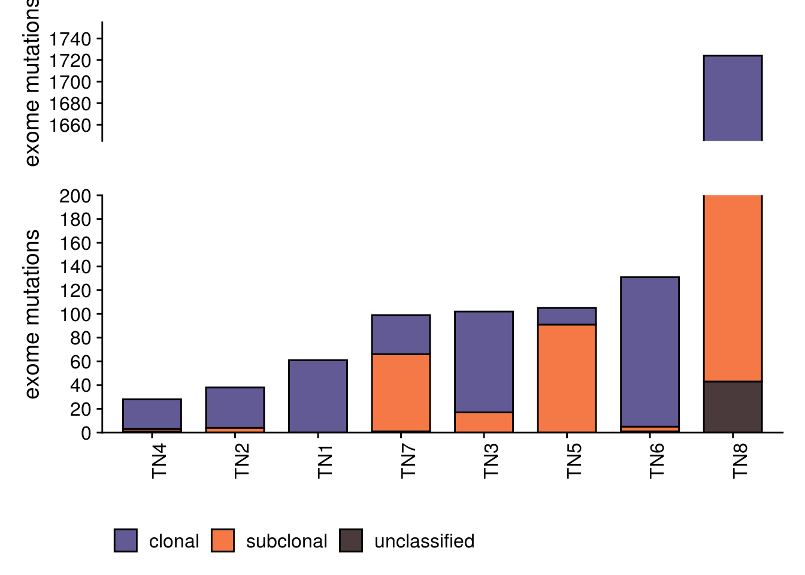
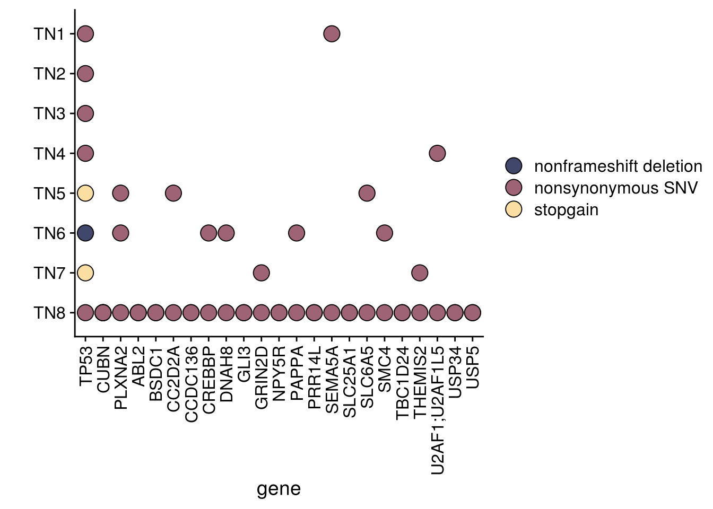
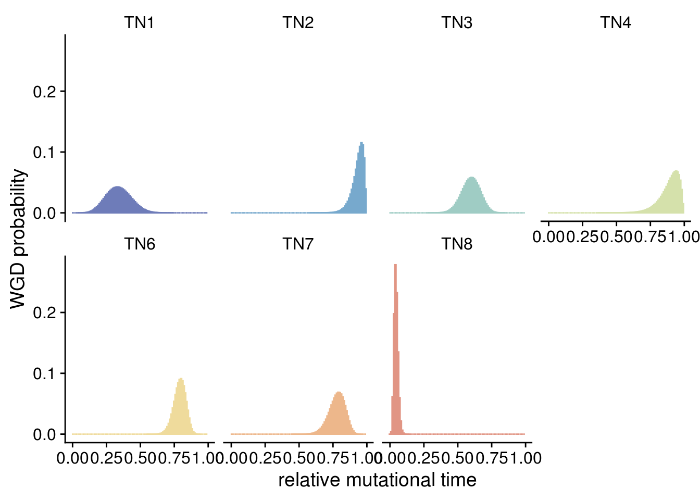
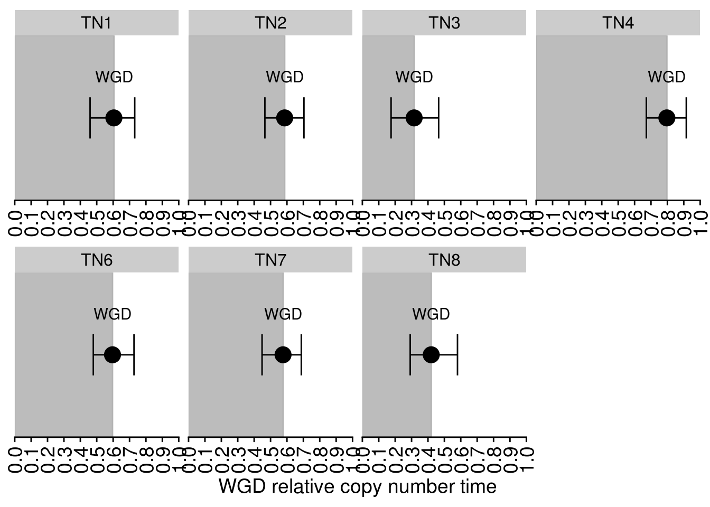

6 Exome and WGD
6.1 Data
## Scanning file to determine attributes.
## File attributes:
## meta lines: 165
## header_line: 166
## variant count: 141
## column count: 15
##
Meta line 165 read in.
## All meta lines processed.
## gt matrix initialized.
## Character matrix gt created.
## Character matrix gt rows: 141
## Character matrix gt cols: 15
## skip: 0
## nrows: 141
## row_num: 0
##
Processed variant: 141
## All variants processedTN1_annovar <- read_delim(here("extdata/exome/annovar/TN1.annovar.csv"),
delim = ",") %>%
dplyr::rename(CHROM = "Chr",
POS = "Start")## Parsed with column specification:
## cols(
## .default = col_character(),
## Start = col_double(),
## End = col_double()
## )## See spec(...) for full column specifications.## Scanning file to determine attributes.
## File attributes:
## meta lines: 165
## header_line: 166
## variant count: 96
## column count: 15
##
Meta line 165 read in.
## All meta lines processed.
## gt matrix initialized.
## Character matrix gt created.
## Character matrix gt rows: 96
## Character matrix gt cols: 15
## skip: 0
## nrows: 96
## row_num: 0
##
Processed variant: 96
## All variants processedTN2_annovar <- read_delim(here("extdata/exome/annovar/TN2.annovar.csv"),
delim = ",") %>%
rename(CHROM = "Chr",
POS = "Start")## Parsed with column specification:
## cols(
## .default = col_character(),
## Start = col_double(),
## End = col_double()
## )
## See spec(...) for full column specifications.## Scanning file to determine attributes.
## File attributes:
## meta lines: 165
## header_line: 166
## variant count: 1057
## column count: 15
##
Meta line 165 read in.
## All meta lines processed.
## gt matrix initialized.
## Character matrix gt created.
## Character matrix gt rows: 1057
## Character matrix gt cols: 15
## skip: 0
## nrows: 1057
## row_num: 0
##
Processed variant 1000
Processed variant: 1057
## All variants processedTN3_annovar <- read_delim(here("extdata/exome/annovar/TN3.annovar.csv"),
delim = ",") %>%
dplyr::rename(CHROM = "Chr",
POS = "Start")## Parsed with column specification:
## cols(
## .default = col_character(),
## Start = col_double(),
## End = col_double()
## )
## See spec(...) for full column specifications.## Scanning file to determine attributes.
## File attributes:
## meta lines: 165
## header_line: 166
## variant count: 97
## column count: 15
##
Meta line 165 read in.
## All meta lines processed.
## gt matrix initialized.
## Character matrix gt created.
## Character matrix gt rows: 97
## Character matrix gt cols: 15
## skip: 0
## nrows: 97
## row_num: 0
##
Processed variant: 97
## All variants processedTN4_annovar <- read_delim(here("extdata/exome/annovar/TN4.annovar.csv"),
delim = ",") %>%
dplyr::rename(CHROM = "Chr",
POS = "Start")## Parsed with column specification:
## cols(
## .default = col_character(),
## Start = col_double(),
## End = col_double()
## )
## See spec(...) for full column specifications.## Scanning file to determine attributes.
## File attributes:
## meta lines: 166
## header_line: 167
## variant count: 300
## column count: 16
##
Meta line 166 read in.
## All meta lines processed.
## gt matrix initialized.
## Character matrix gt created.
## Character matrix gt rows: 300
## Character matrix gt cols: 16
## skip: 0
## nrows: 300
## row_num: 0
##
Processed variant: 300
## All variants processedTN5_annovar <- read_delim(here("extdata/exome/annovar/TN5.annovar.csv"),
delim = ",") %>%
dplyr::rename(CHROM = "Chr",
POS = "Start")## Parsed with column specification:
## cols(
## .default = col_character(),
## Start = col_double(),
## End = col_double()
## )
## See spec(...) for full column specifications.## Scanning file to determine attributes.
## File attributes:
## meta lines: 166
## header_line: 167
## variant count: 291
## column count: 16
##
Meta line 166 read in.
## All meta lines processed.
## gt matrix initialized.
## Character matrix gt created.
## Character matrix gt rows: 291
## Character matrix gt cols: 16
## skip: 0
## nrows: 291
## row_num: 0
##
Processed variant: 291
## All variants processedTN6_annovar <- read_delim(here("extdata/exome/annovar/TN6.annovar.csv"),
delim = ",") %>%
dplyr::rename(CHROM = "Chr",
POS = "Start")## Parsed with column specification:
## cols(
## .default = col_character(),
## Start = col_double(),
## End = col_double()
## )
## See spec(...) for full column specifications.## Scanning file to determine attributes.
## File attributes:
## meta lines: 164
## header_line: 165
## variant count: 406
## column count: 14
##
Meta line 164 read in.
## All meta lines processed.
## gt matrix initialized.
## Character matrix gt created.
## Character matrix gt rows: 406
## Character matrix gt cols: 14
## skip: 0
## nrows: 406
## row_num: 0
##
Processed variant: 406
## All variants processedTN7_annovar <- read_delim(here("extdata/exome/annovar/TN7.annovar.csv"),
delim = ",") %>%
dplyr::rename(CHROM = "Chr",
POS = "Start")## Parsed with column specification:
## cols(
## .default = col_character(),
## Start = col_double(),
## End = col_double()
## )
## See spec(...) for full column specifications.## Scanning file to determine attributes.
## File attributes:
## meta lines: 165
## header_line: 166
## variant count: 6592
## column count: 15
##
Meta line 165 read in.
## All meta lines processed.
## gt matrix initialized.
## Character matrix gt created.
## Character matrix gt rows: 6592
## Character matrix gt cols: 15
## skip: 0
## nrows: 6592
## row_num: 0
##
Processed variant 1000
Processed variant 2000
Processed variant 3000
Processed variant 4000
Processed variant 5000
Processed variant 6000
Processed variant: 6592
## All variants processedTN8_annovar <- read_delim(here("extdata/exome/annovar/TN8.annovar.csv"),
delim = ",") %>%
dplyr::rename(CHROM = "Chr",
POS = "Start")## Parsed with column specification:
## cols(
## .default = col_character(),
## Start = col_double(),
## End = col_double()
## )
## See spec(...) for full column specifications.6.2 Filtering
TN1_mutations <- vcf_filtering(
mutect = TN1_mutect,
annovar = TN1_annovar,
min_AD = 1,
bulk_normal = "TN28N",
bulk_tumor = "TN28S1A"
) %>%
left_join(TN1_annovar)
TN2_mutations <- vcf_filtering(
mutect = TN2_mutect,
annovar = TN2_annovar,
min_AD = 1,
bulk_normal = "TN20N",
bulk_tumor = "TN20S1A"
) %>%
left_join(TN2_annovar)
TN3_mutations <- vcf_filtering(
mutect = TN3_mutect,
annovar = TN3_annovar,
min_AD = 1,
bulk_normal = "TN17N",
bulk_tumor = "TN17A"
) %>%
left_join(TN3_annovar)
TN4_mutations <- vcf_filtering(
mutect = TN4_mutect,
annovar = TN4_annovar,
min_AD = 1,
bulk_normal = "TN26N",
bulk_tumor = "TN26S2A"
) %>%
left_join(TN4_annovar)
TN5_mutations <- vcf_filtering(
mutect = TN5_mutect,
annovar = TN5_annovar,
min_AD = 1,
bulk_normal = "TN21N",
bulk_tumor = "TN21S1A"
) %>%
left_join(TN5_annovar)
TN6_mutations <- vcf_filtering(
mutect = TN6_mutect,
annovar = TN6_annovar,
min_AD = 1,
bulk_normal = "BRCADN",
bulk_tumor = "BRCADT"
) %>%
left_join(TN6_annovar)
TN7_mutations <- vcf_filtering(
mutect = TN7_mutect,
annovar = TN7_annovar,
min_AD = 1,
bulk_normal = "BRCACN",
bulk_tumor = "BRCACT"
) %>%
left_join(TN7_annovar)
TN8_mutations <- vcf_filtering(
mutect = TN8_mutect,
annovar = TN8_annovar,
min_AD = 1,
bulk_normal = "TN27N",
bulk_tumor = "TN27A"
) %>%
left_join(TN8_annovar)
# Unique data frame for mutations, excluding matched normal from the vcf
TN_muts <- bind_rows(
TN1_mutations %>% filter(sample != "TN28N") %>% mutate(patient = "TN1"),
TN2_mutations %>% filter(sample != "TN20N") %>% mutate(patient = "TN2"),
TN3_mutations %>% filter(sample != "TN17N") %>% mutate(patient = "TN3"),
TN4_mutations %>% filter(sample != "TN26N") %>% mutate(patient = "TN4"),
TN5_mutations %>% filter(sample != "TN21N") %>% mutate(patient = "TN5"),
TN6_mutations %>% filter(sample != "BRCADN") %>% mutate(patient = "TN6"),
TN7_mutations %>% filter(sample != "BRCACN") %>% mutate(patient = "TN7"),
TN8_mutations %>% filter(sample != "TN27N") %>% mutate(patient = "TN8")
)6.3 Mut timer information
TN1_mut_time <- parse_mtimer_vcf(here("extdata/exome/mut_timer/TN1_m_timer.vcf")) %>% mutate(patient = "TN1")
TN2_mut_time <- parse_mtimer_vcf(here("extdata/exome/mut_timer/TN2_m_timer.vcf")) %>% mutate(patient = "TN2")
TN3_mut_time <- parse_mtimer_vcf(here("extdata/exome/mut_timer/TN3_m_timer.vcf")) %>% mutate(patient = "TN3")
TN4_mut_time <- parse_mtimer_vcf(here("extdata/exome/mut_timer/TN4_m_timer.vcf")) %>% mutate(patient = "TN4")
TN5_mut_time <- parse_mtimer_vcf(here("extdata/exome/mut_timer/TN5_m_timer.vcf")) %>% mutate(patient = "TN5")
TN6_mut_time <- parse_mtimer_vcf(here("extdata/exome/mut_timer/TN6_m_timer.vcf")) %>% mutate(patient = "TN6")
TN7_mut_time <- parse_mtimer_vcf(here("extdata/exome/mut_timer/TN7_m_timer.vcf")) %>% mutate(patient = "TN7")
TN8_mut_time <- parse_mtimer_vcf(here("extdata/exome/mut_timer/TN8_m_timer.vcf")) %>% mutate(patient = "TN8")
TN_mut_time <- bind_rows(
TN1_mut_time,
TN2_mut_time,
TN3_mut_time,
TN4_mut_time,
TN5_mut_time,
TN6_mut_time,
TN7_mut_time,
TN8_mut_time
)6.4 Mutation burden
# merging with mutation timer
TN_muts_j_time <- left_join(TN_muts, TN_mut_time) %>%
filter(sample %in% c("TN28S1A", "TN20S1A", "TN17A", "TN26S2A", "TN21S1A", "BRCADT", "BRCACT", "TN27A")) %>%
mutate(indel = case_when(str_length(Alt) > 1 ~ "indel", TRUE ~ 'SNV')) %>%
mutate(mutation_time = case_when(is.na(mutation_time) & str_length(Alt) > 1 ~ 'indel',
is.na(mutation_time) & str_length(Alt) == 1 ~ 'unclassified',
TRUE ~ mutation_time))## Joining, by = c("CHROM", "POS", "patient")p_mut_burden <- TN_muts_j_time %>%
group_by(sample) %>%
filter(sample %in% c("TN28S1A", "TN20S1A", "TN17A", "TN26S2A", "TN21S1A", "BRCADT", "BRCACT", "TN27A"),
mutation_time != "indel") %>%
add_count(patient, name = "mutation_total") %>%
ggplot(aes(fct_reorder(patient, mutation_total), fill = mutation_time)) +
geom_bar(color = 'black', width = .7) +
scale_fill_manual(values = c("clonal" = "#625a94","subclonal" = "#f57946","indel" = "#ecc0a1",
"unclassified" = "#4a3a3b")) +
scale_y_continuous(breaks = scales::pretty_breaks(n = 10),
expand = c(0,0)) +
theme(axis.text.x = element_text(angle = 90),
legend.position = "bottom") +
xlab("") +
ylab("exome mutations") +
labs(fill = "")
p_mut_burden_1<- p_mut_burden + coord_cartesian(ylim = c(0, 200))
p_mut_burden_2 <- p_mut_burden + coord_cartesian(ylim = c(1650, 1750)) +
scale_y_continuous(breaks = scales::pretty_breaks(n = 5)) +
theme(legend.position = "none",
axis.line.x = element_blank(),
axis.text.x = element_blank(),
axis.ticks.x = element_blank()) ## Scale for 'y' is already present. Adding another scale for 'y', which will replace the existing scale.p_mut_burden_break <- p_mut_burden_2/p_mut_burden_1 + plot_layout(heights = c(1,2))
p_mut_burden_break
6.5 Oncomap
genes_upset <- TN_muts %>%
filter(sample %in% c("TN28S1A", "TN20S1A", "TN17A", "TN26S2A", "TN21S1A", "BRCADT", "BRCACT", "TN27A"),
ExonicFunc.refGene != "synonymous SNV",
Polyphen2_HDIV_score > 0.85,
SIFT_score < 0.05) %>%
group_by(patient) %>%
ungroup() %>%
count(Gene.refGene, sort = T) %>%
filter(n > 1) %>%
pull(Gene.refGene)
oncomap <- TN_muts %>%
filter(sample %in% c("TN28S1A", "TN20S1A", "TN17A", "TN26S2A", "TN21S1A", "BRCADT", "BRCACT", "TN27A"),
ExonicFunc.refGene != "synonymous SNV") %>%
filter(Gene.refGene %in% genes_upset) %>%
ggplot(aes(Gene.refGene,
patient)) +
geom_point(aes(fill = ExonicFunc.refGene),
size = 5,
shape = 21) +
scale_x_discrete(limits = genes_upset) +
scale_y_discrete(limits = rev(paste0("TN", 1:8))) +
scale_fill_manual(values = PNWColors::pnw_palette("Sunset", 3)) +
theme(axis.text.x = element_text(angle = 90,
vjust = .5,
hjust = 1)) +
labs(x = "gene",
y = "",
fill = "")
oncomap
6.6 WGD estimation in mutational timing
# TN5 can't be confidently estimated and for this reason is excluded
wgd_time <- read.table(here("extdata/exome/timing/wgd_timing_distributions.tsv"),
header = T) %>%
mutate(Sample_ID = case_when(
str_detect(Sample_ID, "TN28") ~ "TN1",
str_detect(Sample_ID, "TN20") ~ "TN2",
str_detect(Sample_ID, "TN17") ~ "TN3",
str_detect(Sample_ID, "TN26") ~ "TN4",
str_detect(Sample_ID, "TN21") ~ "TN5",
str_detect(Sample_ID, "TN27") ~ "TN8",
str_detect(Sample_ID, "pD") ~ "TN6",
str_detect(Sample_ID, "pC") ~ "TN7"
)) %>%
filter(Sample_ID != "TN5")
wgd_time_tidy <- wgd_time %>%
gather(key = "bin",
value = "prob",
-Distribution_Name,
-Sample_ID) %>%
mutate(bin = str_extract(bin, "[0-9].[0-9]+"),
bin = as.numeric(bin),
)
wgd_plot <- ggplot(wgd_time_tidy) +
geom_col(aes(x = bin,
y = prob,
fill = Sample_ID,
color = Sample_ID)) +
scale_fill_manual(values = PNWColors::pnw_palette("Sailboat", 8)) +
scale_color_manual(values = PNWColors::pnw_palette("Sailboat", 8)) +
facet_wrap(vars(Sample_ID), nrow = 2) +
theme_cowplot() +
theme(strip.background = element_blank(),
legend.position = "none") +
labs(x = "relative mutational time",
y = "WGD probability",
fill = "",
color = "")
wgd_plot
6.7 WGD estimations in copy number time
# TN5 can't be confidently estimated and for this reason is excluded
cn_time_wgd <- read.delim(here("extdata/exome/timing/cn_timing_confidence_intervals.tsv")) %>%
mutate(Sample_ID = case_when(
str_detect(Sample_ID, "TN28") ~ "TN1",
str_detect(Sample_ID, "TN20") ~ "TN2",
str_detect(Sample_ID, "TN17") ~ "TN3",
str_detect(Sample_ID, "TN26") ~ "TN4",
str_detect(Sample_ID, "TN27") ~ "TN8",
str_detect(Sample_ID, "pD") ~ "TN6",
str_detect(Sample_ID, "pC") ~ "TN7"
)) %>%
filter(Sample_ID != "TN5")
cn_wgd_plot <- cn_time_wgd %>%
ggplot(aes(y = Early_Fraction,
x = "samp")) +
geom_rect(aes(ymin = 0, ymax = Early_Fraction, xmin = -Inf, xmax = Inf), color = 'gray70', alpha = .4) +
geom_point(size = 5) +
geom_errorbar(aes(ymin = Early_Fraction_Low_CI,
ymax = Early_Fraction_High_CI),
width = .3) +
geom_text(aes(label = "WGD"), nudge_x = .3) +
scale_y_continuous(limits = c(0,1),
breaks = scales::pretty_breaks(n = 10),
expand = c(0,0)) +
facet_wrap(vars(Sample_ID), scales = "free_x", nrow = 2) +
theme(axis.line.y = element_blank(),
axis.text.y = element_blank(),
axis.ticks.y = element_blank(),
axis.title.y = element_blank(),
axis.text.x = element_text(size = 14,
angle = 90,
vjust = .5,
hjust = 1)) +
labs(y = "WGD relative copy number time") +
coord_flip()
cn_wgd_plot